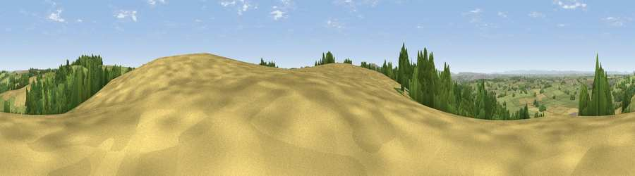

Viewpoint near Doynton
#10095 in England · top 12% of its area beats it · near DoyntonThe view, rendered

A 360° render of this exact spot computed from the terrain model, tree cover and land cover — summer colours, afternoon light, calibrated against photographs of famous viewpoints. Real trees, hedges and buildings will differ in detail.
The panorama
Grey silhouette: terrain skyline in each direction (720 bearings, Earth curvature and refraction included). Dashed green: skyline with trees (+15 m) and buildings (+8 m) as obstacles. Blue strip: how far the ground is visible on each bearing.
Where the view opens
Wedge length = distance to the farthest visible ground on that bearing (vegetation-aware). Rings at 10, 25 and 50 km.
What fills the view
51% grassland · 28% woodland · 19% cropland · 2% built-up
Angular shares of the visible panorama (visual magnitude), not map area. Landscape diversity 0.47 (0–1 Shannon).
Key numbers
More beautiful places nearby
The staircase of upgrades: each row has a higher view potential than everything closer. Driving times are estimates from straight-line distance, calibrated against real road routing — check an actual route before setting out.
| Place | Direction | Drive | Score |
|---|---|---|---|
| Viewpoint near Hinton | NNE · 4 km | ~9 min | 65.9 |
| Hanging Hill | SW · 5 km | ~11 min | 76.4 |
| Viewpoint near Stinchcombe | N · 24 km | ~39 min | 80.5 |
| Garway Hill | NNW · 59 km | ~82 min | 84.6 |
| Millennium Hill | N · 66 km | ~89 min | 86.9 |
| Viewpoint near West Quantoxhead | WSW · 69 km | ~92 min | 87.9 |
| Viewpoint near West Quantoxhead | WSW · 70 km | ~93 min | 88.7 |
| The Knoll | SSW · 89 km | ~113 min | 91.0 |
51.46504, -2.37674 · source: screening · position refined by local search. Computed location — check access rights before visiting.